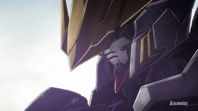
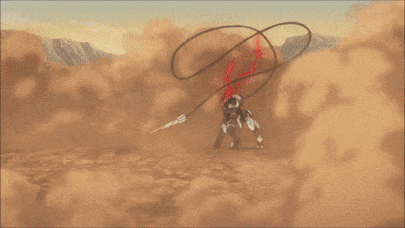
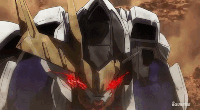

Gundam Barbatos Lupus Rex
More Info
The final Gundam in our gallery, Gundam Barbatos Lupus Rex. Gundams in this timeline were meant to fight against unmanned mobile armors known as "Hashmal". What makes this Gundam, or every Gundam in its series, was how its uses. It uses a system called the Alaya-Vijnana system, a system of nanobites or machines plugged into the human body, creating a grotesque form on the spine only uses to work mobile suits. The pilot of this Gundam, Mikazuki Argus, would meet his end in his series as the first Gundam pilot to lose his final battle, but still achieves his goal for his family and friends.